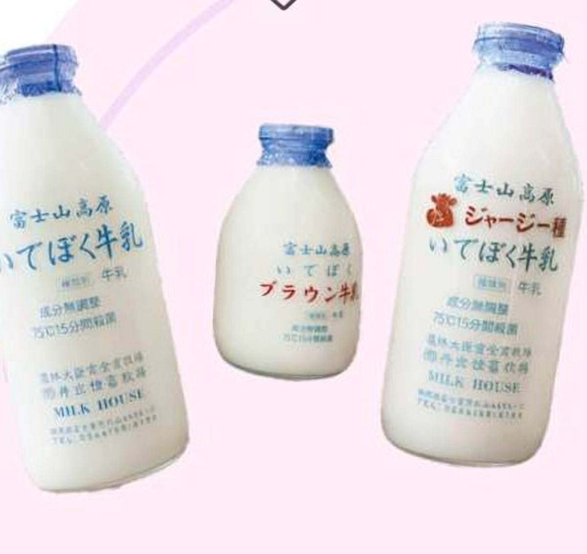
IDEBOK部
IDEBOK
「推し牛乳を見つけよう！」
あなたの推し牛乳、見つけてみませんか？
「推し牛乳を見つけよう！」をコンセプトに、3種類の牛乳の飲み比べ体験を実施します。牛乳ごとの味わいの違いを楽しみながら、自分だけのお気に入りの一本を見つけてみませんか？牛乳瓶型のポーチなど、かわいいグッズの販売も予定しています。
Oishiku, Tanoshiku, Azayakani. — Gofukucho Street, Shizuoka
おいしく、たのしく、彩やかに。− 静岡に「わ」の1ページを。−
October 2026 10.11sun12mon
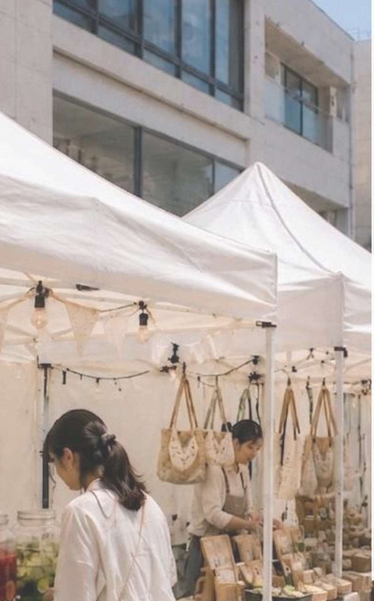
おいしく、たのしく、彩やかに。
学生が呉服町通りをプロデュース
学生が静岡の未来を考える ─「挑戦の１ページを彩る。」
私たちが目指すのは、学生時代に静岡の魅力（地域資源）を五感で体験し、静岡の新しい側面を知り、自身が育った静岡に誇りを持つ姿。
そしてその先、仮に県外移住を選択しても、静岡にUターンしたり、関係人口・交流人口として携わったりする姿。もちろん、そのまま静岡に住み続ける選択も理想的です。
その姿を実現するために、静岡で活躍する出店者様・パフォーマー様の「挑戦の１ページ」を彩り、若者に受けるコンテンツを創出します。
「学生」という等身大ながら静岡に貢献することで、学生の「静岡の魅力への理解（なるほど。）」の可能性を広げたい。そういった思いから集結したのが、実行委員会「I see's」です。
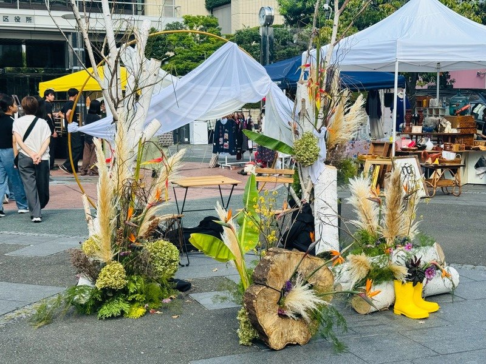
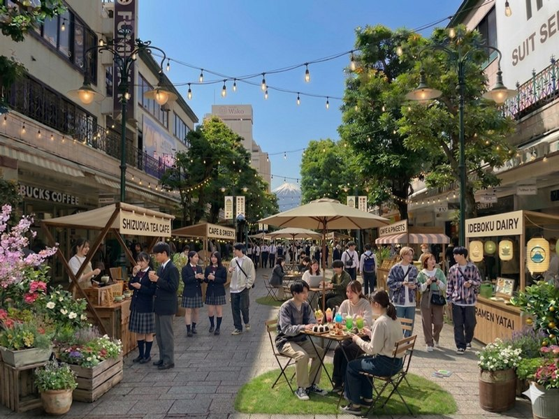
主にターゲット層の集客を促進するため、新しいコンテンツに「挑戦」し、コンセプトに添ったフォトスポットや会場装飾も行います。
「あ！こんなお店があったんだ。」
「あ！こんな人静岡にいたんだ。」
という自発的な驚きを体験。
イベント終了後に出店者様の実店舗を訪ねたり、数年後、数十年後に「久しぶりに会いに行こう。」「あのお店に行ってみよう。」と思ったりできる繋がりの創出。
県外移住も視野に入れている高校生・大学生に
静岡の魅力や人との繋がりが五感を通して「伝わる」
背景は会場イメージです
マルシェ、ステージ、フォトスポット。
静岡の「挑戦の１ページ」が、呉服町通りに集まります。

IDEBOK部
あなたの推し牛乳、見つけてみませんか？
「推し牛乳を見つけよう！」をコンセプトに、3種類の牛乳の飲み比べ体験を実施します。牛乳ごとの味わいの違いを楽しみながら、自分だけのお気に入りの一本を見つけてみませんか？牛乳瓶型のポーチなど、かわいいグッズの販売も予定しています。
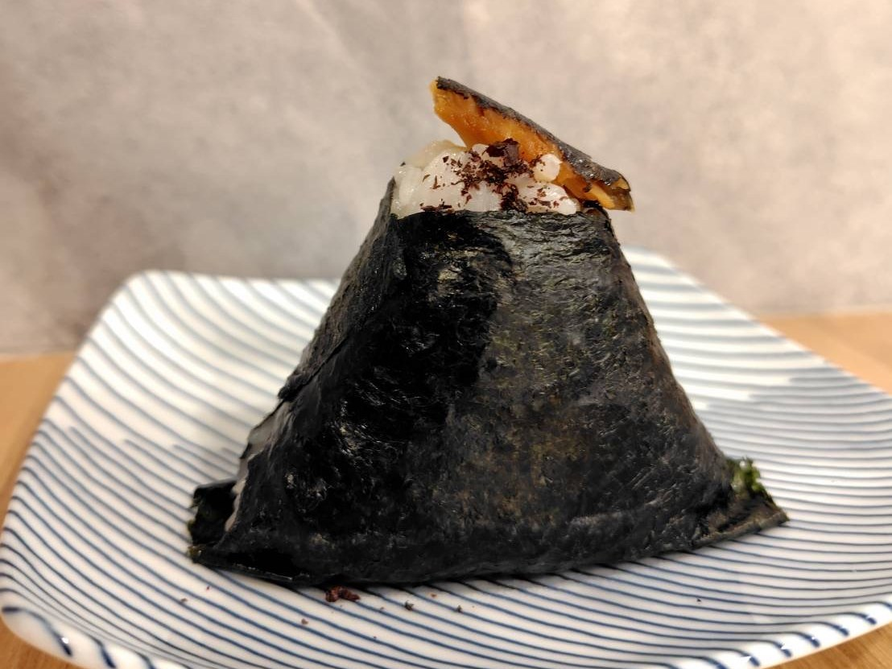
異業界コラボレーション
にぎる、つながる。静岡を一周できるおむすび
おむすび専門店「ふじ亭」と地域おこし協力隊が夢のコラボ！静岡県内4地域の特産品や隠れた名産品をぎゅっと詰め込んだ限定おむすびを販売。ひとくち食べれば、あなたと地域がつながる特別な体験を味わえます。
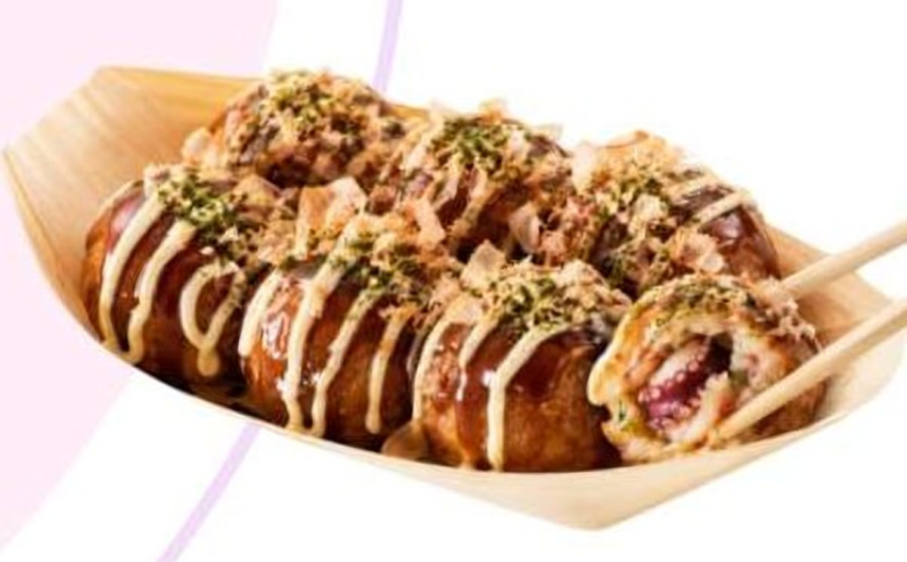
マルシェ
コンテナを活用し、地域の人が気軽に立ち寄れるたこ焼き屋さんを目指します。学生や子どもにも親しみやすい味付けや空間づくりで、地域に愛されるお店をつくります。
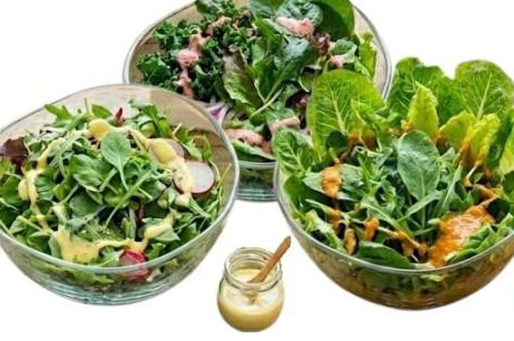
農家 × 発酵大学生
農園ナランハさんの新鮮こだわりリーフに、発酵ドレッシングを合わせて楽しむサラダボウル。心と体を整える食の楽しみ方を提案します。「発酵の可能性」をぜひ感じてください。
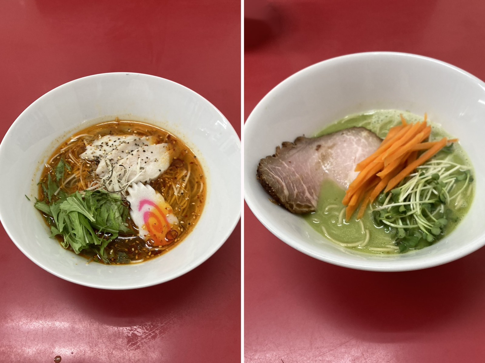
異業界コラボレーション
静岡市内の大学祭実行委員会の方々と市内のラーメン屋さんがコラボして新商品を開発します。大学生による若者のトレンドと、静岡市内で人気のラーメン屋さんの異業種コラボをお楽しみに。
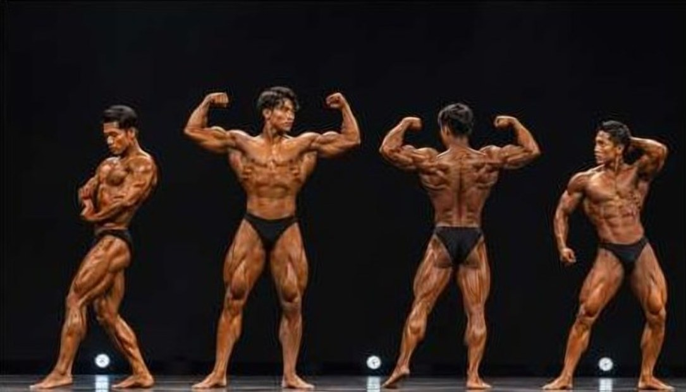
ステージ
魅せる肉体、魅せる生き様。
「静岡一」筋肉にアツい若者を決める、一日限りのぶつかり合い。鍛え上げた身体と個性を競うステージを、ぜひ間近でご覧ください。
参加者募集ページ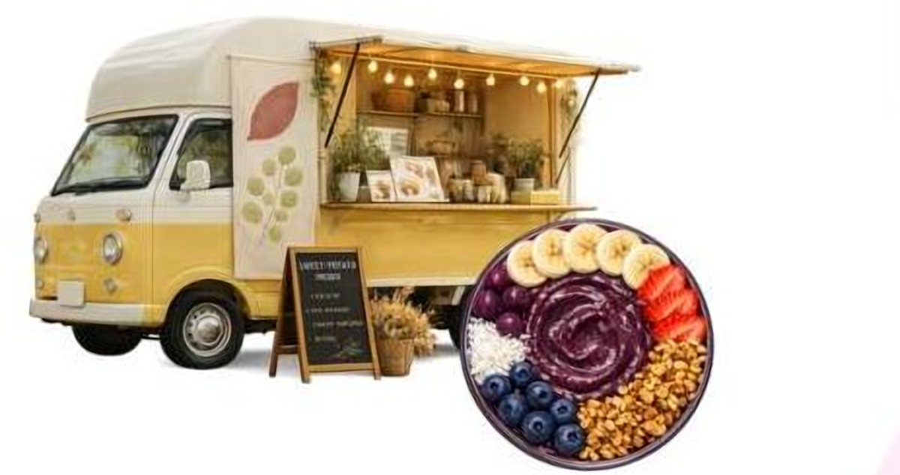
マルシェ
おまちの外にある魅力的な店舗が集まり、普段はなかなか出会えないお店や商品をお届けします。初めて出店に挑戦する方の「挑戦」も全力でバックアップ。
出店者募集ページ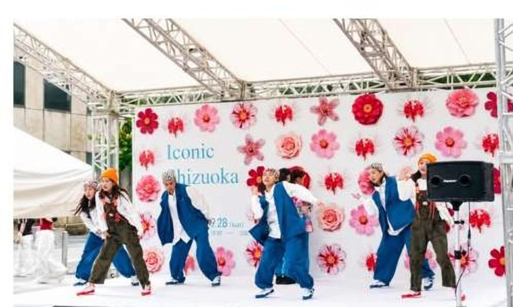
ステージ
誰かの「好き」が、交差点で重なる
マルシェでお腹を満たしたら、次は耳と心を満たしませんか？今年のステージは街の交差点が舞台。出演者それぞれの「好き」が詰まったパフォーマンスをお届けします。
出演者募集ページフラワード・ストリートデザインコンテンツ部
会場中央に大きな花束を飾ります。来場者は「いいね」と感じたブースへ、その花を届けることができます。この花は評価ではなく、あくまでも「気持ち」。呉服町通りをより色とりどりに彩ります。
「挑戦の１ページ」メインオブジェデザインコンテンツ部
事前に多くの静岡の人に「あなたの挑戦の１ページ」を伺い、当日は十人十色の「挑戦の１ページ」を模したオブジェを設置。鮮やかな花で装飾し、あなたの「挑戦の1ページ」を彩ります。
ラッキードローデザインコンテンツ部
出店者様のブースで1,000円以上のお買い上げで参加できるガチャガチャ。景品は静岡にゆかりのある豪華景品をラインナップ。どうしても回したくなるワクワクをあなたに。
県内インフルエンサー × お茶のカクテル異業界コラボレーション
県内のグルメ・お出かけ情報を発信するインフルエンサーが、お茶を使ったカクテル・ノンアルコールドリンクをお好みにカスタマイズ。当日限定で販売します。
音楽・ダンスパフォーマンスステージ担当部
県内のシンガーソングライター・ダンスパフォーマーの方々を中心に。ステージは設けず、同じ視線と近い距離で、より来場者の心に届くように設計します。
2026
10.11sun10.12mon
11:30 – 17:00
両日とも 11:30〜17:00 入退場自由
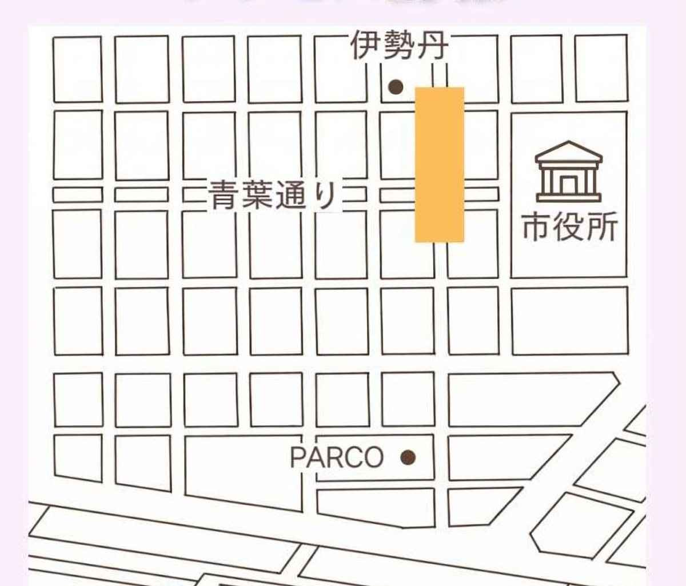
呉服町通りGofukucho Street, Aoi-ku, Shizuoka
JR静岡駅から徒歩約10分。伊勢丹、静岡市役所、PARCOに囲まれた、静岡のまちなかの目抜き通りが会場です。
Iconic Shizuoka2025
2025年9月に青葉イベント広場・青葉シンボルロードで開催した、昨年の記録です。2026年の開催情報は 開催概要 をご覧ください。
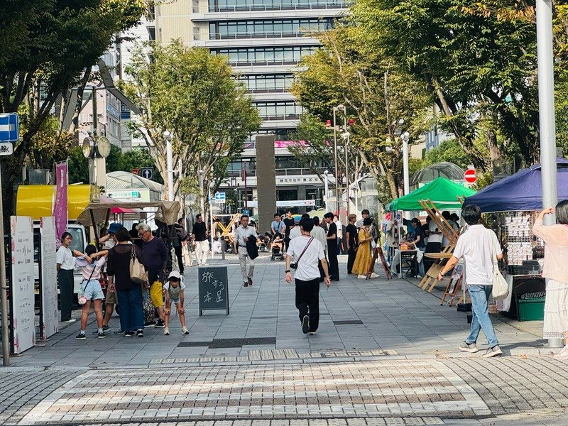
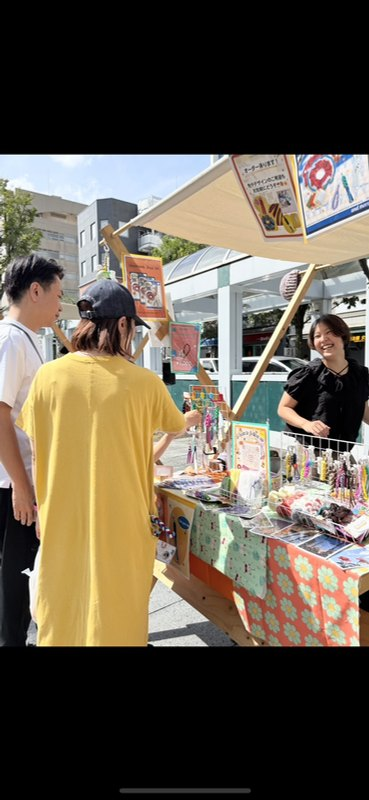
学生が主催する Iconic Shizuoka 2026 を、
静岡の企業の皆さまと一緒につくりたい。
企画段階から、県内外の大学・専門学校・高校の学生と接点が生まれます。イベント終了後は学生との交流会を通し、採用活動にもつながる機会を創出します。
企業情報を県内の至る場所で発信します。ターゲット層に届く発信方法を活用するため、若年層にも企業様の情報が確実に届きます。
学生が主催するイベントを通し、地域貢献や学生支援、そして幅広い来場者のコミュニティ形成にも寄与できます。
I see'sIconic Shizuoka 2026 実行委員会
高校1年生から大学4年生まで、県内外の大学・専門学校・高校から集まった学生による実行委員会です。「挑戦の１ページを彩る。」を合言葉に、企画から当日の運営までを学生自身の手で行います。
部署
ご協力学生団体